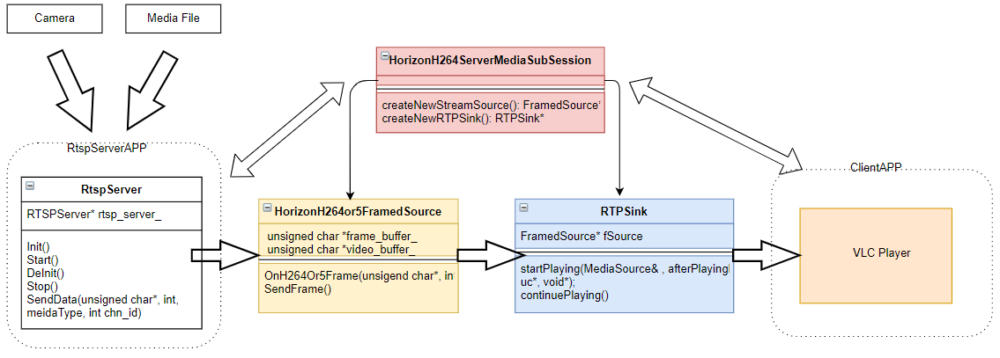

rtsp server¶
rtsp server是一套基于live555框架开发的rtsp媒体转发组件，用于转发推送媒体文件或者实时视频数据，客户端可通过配置文件中的url来拉取音视频, url通道地址可以由客户自由增加扩展。 rtsp server目前只支持H264、H265的媒体转发，内部不包括视频编解码、视频源的生成和解析部分。
一、编译和使用¶
1.1 编译¶
在rtsp_server的根目录下，执行以下命令
bash make.sh
然后将会在当前目录下生成output文件夹，该文件夹的内容如下：
.
└── rtsp_server
├── bin
│ └── rtsp_server_example
├── configs
│ └── rtsp_server.json
├── data
│ ├── chn0.264
│ └── chn1.264
├── include
│ └── rtsp_server
├── lib
│ └── librtsp_server.so
└── run.sh
1.2 运行¶
将rtsp_server目录拷贝到板子上,执行如下命令即可运行:
sh run.sh #默认是info级别的log，如果要debug级别的log，则可执行 sh run.sh d
示例程序会推送本地存放的测试视频文件，例如./data/chn0.264和./data/chn1.264文件，可通过vlc播放器预览，操作如下：
1) 打开vlc播放器
2) 打开媒体-->打开网络串流
3) 输入网络URL：输入如下配置文件中的任一个url地址来完成拉流，例如：
a) rtsp://10.64.61.215:555/chn0
b) rtsp://10.64.61.215:555/chn1
二、开发示例¶
本章节以推送本地多个视频文件为例，来说明如何使用rtsp_server组件构建多路推流和转发服务。
2.1 配置参数¶
{
"auth_mode": 0, // 是否开启密码认证功能, 0:不开启rtsp认证, 1:开启认证
"user": "admin", // rtsp 推流用户名
"password": "123456", // rtsp 推流认证密码
"port": 555, // rtsp端口号，默认555
"chn_num": 2, // rtsp通道数量
"chn_0": {
"url": "rtsp://10.64.61.215:555/chn0", // chn0的url
"video_type": 0, // 视频编码，0：H264, 1:H265
"audio_type": 0, // 音频编码，2：g711, 3:g726
},
"chn_1": {
"url": "rtsp://10.64.61.215:555/chn1", // chn1的url
"video_type": 0, // 视频编码，0：H264, 1:H265
"audio_type": 0, // 音频编码，2：g711, 3:g726
},
"__video_type_desc": "设置参考：0：H264, 1:H265",
"__audio_type_desc": "设置参考：0：g711, 1:g726"
}
本示例的配置中，构建了两路rtsp媒体转发通道，分别从./data/chn0.264和./data/chn1.264视频源获取H264视频数据，然后由rtsp_server组件转发推送 至客户端。
注意事项¶
配置中url形式为”rtsp://ip_addr:port/chnx”, 此url也是客户端拉流的地址。 url中的port需和port配置保持一致。
2.2 接口介绍¶
class RtspServer {
public:
explicit RtspServer(std::string config_file);
~RtspServer();
/**
* @brief load rtsp config
* @return 0: ok, -1: fail
*/
int Init();
/**
* @brief create RTSPServerRun thread
* @return 0: ok, -1: fail
*/
int Start();
/**
* @brief stop thread
* @return 0: ok, -1: fail
*/
int Stop();
/**
* @brief distory resource
* @return 0: ok, -1: fail
*/
int DeInit();
/**
* @brief send data to rtsp frame source
* @param in buf: frame
* @param in buf_len: frame size
* @param in media_type: H264/H265
* @param in chn_id: channel id
* @return 0: ok, -1: fail
*/
int SendData(unsigned char* buf, int buf_len,
int media_type, int chn_id);
private:
/**
* @brief create live555 rtsp server and add mediasession
* @return 0: ok, -1: fail
*/
int RTSPServerRun(); // server 运行在独立线程
private:
RtspServerConfig* config_;
RTSPServer *rtsp_server_; // live555 rtsp server
TaskScheduler *scheduler_;
UsageEnvironment *env_;
ServerMediaSession *server_media_session_;
std::shared_ptr<std::thread> rtsp_server_thread_;
char watch_variable_;
};
2.3 示例程序¶
本章节主要展示如何使用rtsp_server的接口来实现数据转发功能。
int main(int argc, char **argv) {
if (argv[1] == nullptr) {
std::cout << "rtsp config file is null" << std::endl;
return -1;
}
std::string rtsp_config = std::string(argv[1]);
int chn_id = 0;
// 创建rtsp server对象
auto rtsp_server_ = std::make_shared<RtspServer>(rtsp_config);
// rtps server init
auto ret = rtsp_server_->Init();
if (ret != 0) {
LOGE << "rtspserver init failed";
return -1;
}
// rtps server start
ret = rtsp_server_->Start();
if (ret != 0) {
LOGE << "rtsp server start failed";
return -1;
}
// 利用ffmpeg解析H264或者H265文件，获取每一帧的码流
AVFormatContext *input_ctx_ = nullptr;
auto ret = avformat_open_input(&input_ctx_,
media_source.c_str(), NULL, NULL);
if (ret != 0) {
LOGE << "open media file failed";
return -1;
}
ret = av_find_best_stream(input_ctx_,
AVMEDIA_TYPE_VIDEO, -1, -1, NULL, 0);
if (ret < 0) {
LOGE << "av_find_best_stream failed";
return -1;
}
bool thread_exit_flag_ = false;
AVPacket packet;
auto video_type = enum Video_Type::H264;
while (!thread_exit_flag_) {
ret = av_read_frame(input_ctx_, &packet);
if (ret < 0) {
av_packet_unref(&packet);
break;
} else {
// 向通道chn_id发送一帧的数据，然后通过rtsp server转发出去，
// 转发地址是配置文件中对应chn id中的url地址
rtsp_server_->SendData(packet.data, packet.size,
video_type, chn_id);
}
av_packet_unref(&packet);
usleep(40000);
}
// 关闭ffmpeg
avformat_close_input(&input_ctx_);
// rtsp server对象的停止和卸载
if (rtsp_server_) {
rtsp_server_->Stop();
rtsp_server_->DeInit();
}
return 0;
}
这里的media_producer是对rtsp_server的接口调用，在media_producer->Start()中除了使用rts_server->Start(),另外启动线程从视频文件中读取数据,然后使用rtsp_server->SendData进行转发。
三、设计原理¶
rtsp_server组件以live555框架为基础，分别实现了FramedSource的子类HorizonH264Or5FramedSource来完成媒体转发，实现OnDemandServerMediaSubsession的子类HorizonH264ServerMediaSubsession和HorizonH265ServerMediaSubsession来创建相应的媒体子会话。 复用了RTSPServer类创建rtsp服务器。
3.1 类的继承关系¶
3.2 数据链路¶
rtsp_server组件的数据链路如下,以H264为例： 
在组件中实现了HorizonH264ServerMediaSubsession类，作为H264视频流的子会话, 并在HorizonH264ServerMediaSubsession类中创建HorizonH264Or5FramedSource和H264VideoRTPSink。 RtspServer提供了Start()接口来启动rtsp服务器，并加入相应的媒体子会话，然后等待处理客户端请求。 另外提供了SendData()接口来将应用层数据推送给对应通道的HorizonH264Or5FramedSource， 最后再由对应的H264RTPSink将数据打包发送给客户端。